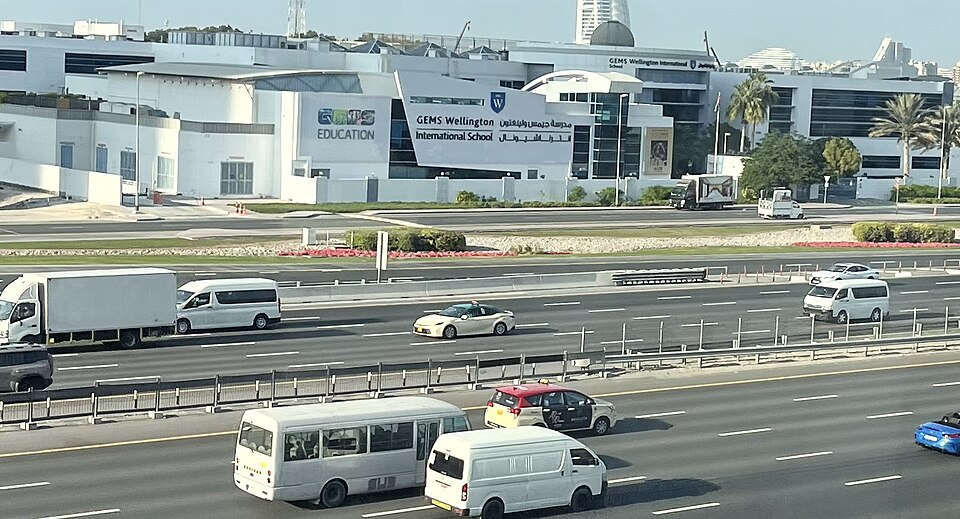

GEMS 웰링턴 인터내셔널 스쿨(두바이 알수푸) · 사진: LittleT889 / Wikimedia Commons, CC0
GEMS 웰링턴 인터내셔널 스쿨(GEMS Wellington International School, 두바이) — 두바이에 "웰링턴"은 한 곳이 아닙니다
1. 어떤 학교인가
· 설립 — 2005년에 문을 연 것으로 알려져 있습니다.
· 위치 — 두바이 알수푸(Al Sufouh), 셰이크 자예드 로드에 면한 생활권으로 안내됩니다. 같은 알수푸 권역에는 두바이 컬리지도 있어, 이 동네는 두바이에서 학교를 알아보는 한국 가정이 자주 보게 되는 지역입니다.
· 학년 — 유아 과정(FS1)부터 Year 13까지로 안내됩니다.
· 교육과정 — 영국 국가교육과정을 바탕으로 하고, 중등에서 GCSE·IGCSE를 치른 뒤 Year 12·13에 IB 디플로마 프로그램을 운영해 온 것으로 알려져 있습니다. 여기에 2025-26학년도 Year 12부터 A-Level 경로를 함께 여는 것으로 안내됩니다.
· 정부 평가 — 두바이의 학교는 교육 당국(KHDA)의 정기 평가 등급을 받습니다. 이 학교는 오랫동안 상위 등급을 받아 온 것으로 알려져 있는데, 등급을 읽는 법과 등급만 보면 안 되는 이유는 DAA 글에 따로 정리해 두었습니다.
※ 학비·정원·합격률·재학생 수처럼 해마다 바뀌는 수치는 이 글에서 다루지 않습니다. 개설 과정과 학년 구성도 연도에 따라 안내가 달라질 수 있으니 올해 요강을 직접 확인하세요.
2. 핵심 ① — 두바이의 "웰링턴"을 구분하는 법
한국어로 된 두바이 학교 후기를 읽다 보면 "웰링턴 보냈어요"라는 문장을 자주 보게 됩니다. 문제는 그 문장만으로는 어느 웰링턴인지 알 수 없다는 점입니다. 위치가 다르고, 문을 연 해가 다르고, 마지막 2년에 무엇으로 마무리하는지도 다릅니다.
구분은 의외로 간단합니다. 이름 뒤에 붙는 지역명을 보세요.
| 학교 | 위치 | 문을 연 해 | 성격 |
|---|---|---|---|
| GEMS 웰링턴 인터내셔널 스쿨 (이 글의 학교) | 알수푸 | 2005년 | 영국식 → IB 디플로마(+A-Level 경로 신설 안내) |
| GEMS 웰링턴 아카데미 | 실리콘 오아시스 | 2011년 | 영국식, 고등에서 IB·A-Level·직업 자격까지 갈래가 넓은 것으로 안내 |
| GEMS 웰링턴 아카데미 | 알카일 | — | 같은 계열의 또 다른 학교 |
| 웰링턴 칼리지 | 영국 본토 | — | 두바이 학교들과 관계없는 영국의 학교 |
실제로 손해가 나는 지점은 세 곳입니다. 집을 구할 때(알수푸와 실리콘 오아시스는 생활권이 완전히 다릅니다), 통학 시간을 계산할 때, 그리고 고등 과정을 미리 알아볼 때입니다. 특히 세 번째가 큽니다. 아이가 A-Level로 가고 싶은지 IB로 가고 싶은지 정해 놓고 학교를 골랐는데, 알고 보니 후기에 나온 학교가 다른 웰링턴이었다면 계획이 통째로 어긋납니다. 이런 일은 이 이름만의 문제가 아니라 국제학교에서 꽤 흔합니다. 상하이의 BISS·NAIS 상하이는 같은 학교가 이름을 바꾼 경우이고, 방콕의 ISB와 베이징의 ISB는 약칭이 겹치는 경우입니다.
3. 핵심 ② — 마지막 2년의 선택지가 지금 바뀌는 중입니다
이 학교를 볼 때 두 번째로 중요한 지점입니다. 영국 국가교육과정으로 시작하는 학교이지만 마지막 2년(Year 12·13)은 오랫동안 IB 디플로마로 운영해 온 것으로 알려져 있습니다. 영국식 학교라고 하면 보통 A-Level을 떠올리시기 때문에, 한국 학부모님들이 여기서 한 번 놀라십니다.
그런데 2025-26학년도 Year 12부터 A-Level 경로를 함께 연다고 안내되고 있습니다. 이 말은 학부모님이 보시는 자료가 몇 년도 것이냐에 따라 마지막 2년의 설명이 다르게 적혀 있다는 뜻입니다.
그래서 확인 순서를 이렇게 잡으시면 됩니다.
· ① 아이가 Year 12에 올라가는 해를 먼저 적는다. 지금 Year 9라면 3년 뒤입니다. 그해 기준으로 물어야 합니다.
· ② 그해에 어떤 경로가 열려 있는지 학교에 직접 묻는다. "IB와 A-Level 중 무엇을 운영하나요"가 아니라 "20○○-○○학년도 Year 12에 어떤 경로가 열리나요"로 물으셔야 답이 정확해집니다.
· ③ 경로가 정해지면 과목 선택으로 내려간다. A-Level은 보통 소수 과목을 깊게 가고, IB 디플로마는 여섯 영역을 폭넓게 가져갑니다. 성격이 아주 다릅니다. → A-Level 과목 선택 · IB DP 점수 구조
중등 구간에서 치르는 IGCSE·GCSE 과목 선택이 그다음 2년의 문을 정해 주기도 합니다. 고등에서 하고 싶은 과목이 있다면 중등 과목 선택 때 이미 그 과목을 잡아 두어야 하는 경우가 있으니, 학교에 미리 확인하세요. → IGCSE 과목 선택 가이드
4. 한국(주재원) 학생·학부모가 겪는 어려움
· 영국식 학년 이름이 낯설다. Year 1~13은 한국 학년과 한 칸씩 어긋나 보여서, 아이를 몇 학년으로 넣어야 하는지부터 헷갈립니다. → 학년 체계 총정리
· 중등 과목 선택이 이르게 옵니다. 영국식은 한국보다 이른 시점에 과목을 줄이는 선택을 합니다. 정보가 없으면 "일단 다 하는" 쪽으로 밀리는데, 그러면 고등에서 시간이 모자랍니다.
· 생활 영어는 느는데 교과 영어가 안 는다. 회화가 빨리 늘어 안심하시지만, 점수는 교과를 읽고 설명하는 영어에서 갈립니다. → EAL(영어 지원 프로그램) · Learning Support
· 수학은 용어와 서술에서 막힌다. 한국에서 이미 배운 내용인데 알지브라·지오메트리 용어가 영어라 못 푸는 경우가 흔합니다. 답만 적으면 과정 점수를 받지 못합니다. → 알지브라 공부법
· 성적이 어떻게 가는지 안 보인다. 학교 플랫폼에는 무엇을 냈는가는 보이는데 왜 그 점수인가는 안 보입니다. → 학습 플랫폼·시간표 읽는 법 · 성적표 읽는 법
· 시험 전 모의고사를 그냥 학교 시험으로 넘긴다. 영국식·IB 학교의 모의고사는 대학 지원에 쓰이는 예측 성적의 근거가 되는 경우가 있습니다. → 모의고사·예측 성적
5. 그래서 이렇게 준비합니다
🧭 먼저 — 아이가 "어느 구간"에 있는지 적는다
영국식으로 시작해 IB나 A-Level로 마무리하는 학교에서는 구간마다 손볼 것이 다릅니다. 종이에 한 줄만 적어 보세요. "우리 아이는 지금 초등 / 중등(IGCSE 전후) / 고등(Year 12·13) 중 어디인가."
· 초등 구간 — 읽기 수준과 영어로 쓰인 수학 용어. 여기서 벌어 두면 뒤가 편합니다.
· 중등 구간 — 과목 선택과 서술형 답안의 형태. 시험이 외부 시험으로 나가므로 형식을 익혀야 합니다.
· 고등 구간 — 기한 관리와 글의 구조. IB든 A-Level이든 여기서 점수가 몰립니다.
📖 영어과외 — 에세이는 "구조"부터
영국식 시험과 IB 모두 글의 구조가 점수를 정합니다. 주장·근거·해석이 한 문단 안에서 어떤 순서로 놓이는지를 익히는 훈련을 먼저 합니다. 내용이 있어도 구조가 없으면 상위 칸에 닿지 못합니다. (영어 공부법 참고)
📐 수학과외 — 용어를 붙이고, 과정을 문장으로
아이가 이미 아는 개념에 영어 용어를 다시 붙여 주는 작업부터 합니다. 그다음 풀이 과정을 영어 문장으로 적는 습관을 들입니다. 마지막 2년의 경로가 정해지면 그에 맞춰 과목 수준을 조정합니다.
📅 학교를 방문하신다면
이 학교처럼 과정이 바뀌는 중인 학교는 가서 물어야 할 것이 분명합니다. "우리 아이가 Year 12가 되는 해에 열리는 경로", "그 경로의 과목 목록", "중등 과목 선택이 고등 선택을 제한하는지" 세 가지입니다. 무엇을 묻고 무엇을 볼지는 오픈데이·학교 방문 준비법에 정리해 두었습니다. → 편입·전학 총정리
6. 두바이의 강점 — 시차 다섯 시간의 화상과외
두바이는 한국보다 다섯 시간 느립니다. 두바이 오후 4시가 한국 밤 9시라, 아이가 학교에서 돌아온 직후 시간이 한국 강사진의 저녁 수업 시간과 맞습니다. 수업은 아이의 실제 과제와 학교가 준 채점 기준을 화면에 놓고 "어느 항목에서 깎였는지"부터 확인하는 방식이 가장 빠릅니다. 두바이 전반의 사정은 두바이 국제학교 수학·영어 과외에 정리해 두었습니다.
정리
GEMS 웰링턴 인터내셔널 스쿨은 2005년 개교로 알려진 두바이 알수푸의 영국식 학교이고, 유아 과정부터 Year 13까지를 운영하는 것으로 안내됩니다. 이 학교를 보실 때 질문은 둘입니다. "내가 읽는 후기가 어느 웰링턴 이야기인가." 그리고 "우리 아이가 Year 12가 되는 해에는 어떤 경로가 열리는가." 두 번째 질문의 답은 학교에 직접 물어야만 나옵니다. 30분 무료 상담으로 우리 아이가 지금 어느 구간에 있는지부터 함께 짚어 보세요.